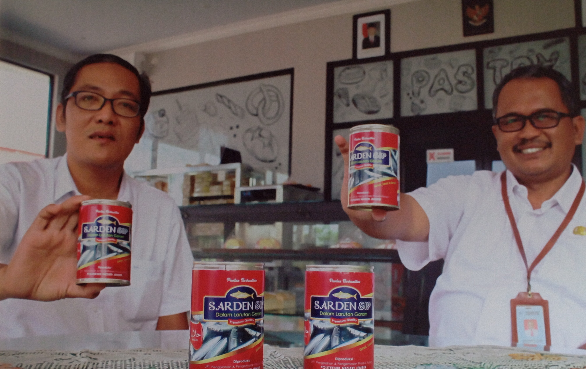

Produk Berkualitas
dari TEFA Fish Canning
Jelajahi produk ikan kaleng yang higienis, lezat, dan diproduksi dengan standar mutu TEFA Politeknik Negeri Jember.

Jelajahi produk ikan kaleng yang higienis, lezat, dan diproduksi dengan standar mutu TEFA Politeknik Negeri Jember.